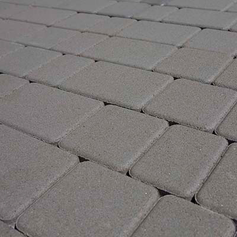
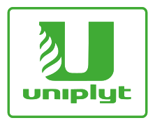
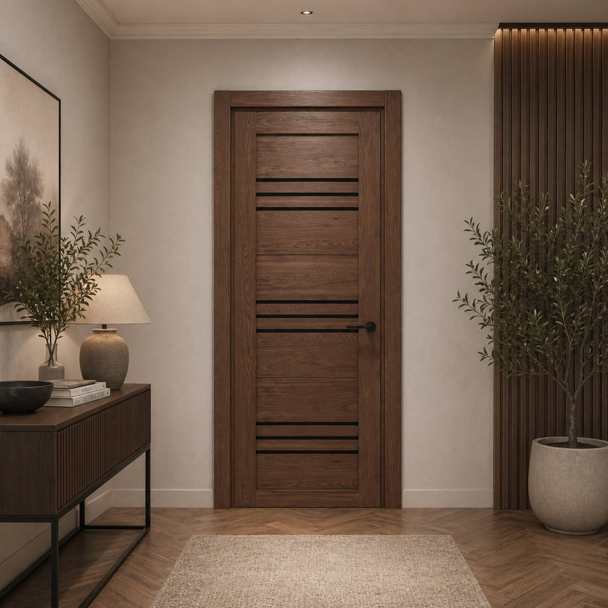
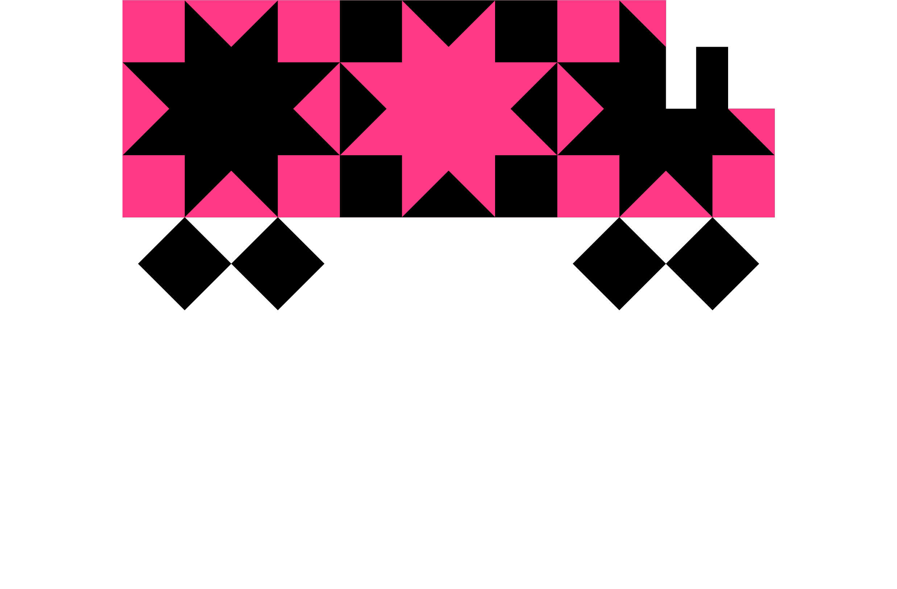

Unibruk — бруківка
Ми успішно працюємо у сфері виробництва бетонної бруківки. Міцні, естетичні та довговічні рішення для тротуарів, подвір'їв і громадських просторів по всій Україні.
unibruk.com.ua →
Вигодський лісокомбінат на Прикарпатті працює з 1970-х. «Уніплит» продовжує його справу і несе марку якості, що накопичувалась десятиліттями. 50+ років безперервного виробничого досвіду в одній точці.
Більшість виробників склеюють деревні плити формальдегідними смолами. Ми йдемо іншим шляхом — мокрим способом, де плиту тримає лігнін: натуральна деревна смола з самого волокна. Та сама речовина, що століттями тримає живе дерево в лісі.
Кожна партія ДВП проходить лабораторний контроль — щільність, вологість, межа міцності, клас емісії формальдегіду. Перевіряємо за ДСТУ, ГОСТ і європейськими нормами. Якщо партія не відповідає хоча б одному показнику — вона не їде. Без винятків.
Наші менеджери підберуть марку плити, розрахують об'єм і логістику — у відповідь ви отримаєте конкретні цифри, а не загальні слова.
Написати у відділ продажівКомпанія «Уніплит» чітко дотримується принципів екологічної відповідальності. Ми використовуємо виключно ліквідну деревину, що дозволяє нам повністю уникнути закупівлі незаконно заготовленого лісоматеріалу чи деревини, добутої без необхідних дозволів. Для нас це не питання формальностей — це питання репутації і поваги до українського лісу.
Ми переконані, що незаконні вирубки завдають непоправної шкоди екосистемам: порушують екологічні стандарти, знижують продуктивність деревостанів, змінюють структуру лісів та призводять до ерозії ґрунтів. Саме тому ми працюємо лише з перевіреними постачальниками, а наш FSC® CoC-сертифікат підтверджує ланцюжок постачання на кожному етапі.
Увесь лісоматеріал, що надходить на виробництво, додатково перевіряється на відповідність допустимим нормам радіаційного забруднення та супроводжується сертифікатами про вміст радіоактивних речовин. Ми не йдемо на компроміси там, де йдеться про безпеку продукції та здоров'я людей.
ТОВ «Уніплит» виробляє матеріали, які не завдають шкоди здоров'ю людини і дозволені Міністерством охорони здоров'я України до використання в житлових, громадських і виробничих приміщеннях. Ми свідомо обираємо екологічно безпечні компоненти на всіх етапах виробництва: ДВП з парафіновою емульсією замість синтетичних зв'язок, ДВПО з водорозчинними лакофарбовими матеріалами та фанеру зі смолами з мінімальним вмістом формальдегіду.
Якість і безпеку ми контролюємо суворо та системно. Усі матеріали, які надходять на виробництво, проходять вхідний лабораторний контроль, а готова продукція — санітарно-епідеміологічний нагляд обласної СЕС. Такий підхід гарантує, що кожна плита, яка залишає наш цех, відповідає як українським, так і європейським нормам.
Ми орієнтуємось на вимоги директив ЄС щодо безпеки та екологічності продукції — це відкриває нам двері на європейські ринки й одночасно гарантує українському споживачу такий самий рівень захисту, що й у Європейському Союзі.
Компанія отримала сертифікат ланцюжка постачання Forest Stewardship Council® за результатами перевірки у липні 2012 року. Переоцінку проведено у 2022 році компанією Preferred by Nature.
Ліцензійний код: FSC-C112264
Реєстраційний номер: NC-COC-013393
Стандарти: FSC-STD-40-004 V3-1; FSC-STD-50-001 V2-1 EN
Термін дії: з 02.10.2022 до 01.10.2027
Сертифікація за стандартами FSC® свідчить про те, що продукція ТОВ «Уніплит» виготовлена з деревини, отриманої з легальних джерел відповідальними лісозаготівельниками. Детальну інформацію можна знайти на офіційному сайті info.fsc.org.
Наше виробництво — це повний цикл переробки деревини: від приймання сировини й підготовки щепи до готової плити, що проходить сушку, пресування та обробку. На потужностях підприємства працюють лінії ДВП і ДВПО, цех обробки пилу, а також котельня, що використовує відходи деревообробки як паливо.
Всі етапи контролюються оператором і лабораторією якості, а обладнання регулярно модернізується для підвищення продуктивності й зниження впливу на довкілля. Нижче представлено галерею ключових ділянок нашого виробництва.
Компанія «Уніплит» — це не лише виробництво екологічно безпечних деревоволокнистих плит та фанери, але й активна громадська позиція. Ми вважаємо, що бізнес має повертати регіону значно більше, ніж забирає, і тому частину зусиль спрямовуємо на підтримку місцевої громади та культури Прикарпаття.
Одним із ключових напрямків є розвиток Карпатського регіону через відновлення туристичного маршруту гірським трамваєм — історичною вузькоколійкою, яка сьогодні знову приймає гостей з усієї України. Цей проект не лише зберігає історичну пам'ять, але й створює робочі місця та стимулює місцевий туризм.
Другий напрямок — залучення молодого покоління до творчих проектів, зокрема до арт-програми «Умілі ручки», що дає дітям можливість відкривати для себе світ ремесел і мистецтва. Ми переконані: інвестиції в дітей — це найкращі інвестиції у майбутнє краю.
Вигодський лісокомбінат — приватне акціонерне товариство, яке функціонує як структурна одиниця виробничого комплексу ТОВ «Уніплит». Підприємство розташоване у селищі Вигода Долинського району Івано-Франківської області на вулиці Данила Галицького. Код компанії в реєстрі ЄДРПОУ — 00274232.
Лісокомбінат спеціалізується на виробництві деревних матеріалів, включаючи ДВП, ДВПО та фанеру, і тісно пов'язаний з корпоративною групою «Уніплит», яка займає провідну позицію на ринку деревообробки в Україні. Товариство має класичну структуру корпоративного управління: виконавчі органи, наглядова рада та ревізійна комісія.
Діяльність підприємства регулюється статутом, який періодично оновлюється на зборах акціонерів, а фінансова звітність публікується у відкритому доступі в розділі «Фінансова звітність».
У цьому розділі ми публікуємо річну фінансову звітність компанії ТОВ «Уніплит» у відкритому доступі. Документи охоплюють період з 2019 по 2024 рік і дають повне уявлення про фінансовий стан підприємства та результати його господарської діяльності.
Для кожного звітного року доступні баланс (звіт про фінансовий стан), звіт про фінансові результати, звіт про рух грошових коштів та звіт про власний капітал. До комплекту документів додаються примітки до річної звітності, інформація за сегментами, звіт незалежного аудитора та звіт про управління.
Усі документи представлені у форматі PDF, доступні для перегляду та завантаження. Прозорість фінансових показників — частина нашої філософії відповідального бізнесу.
Якість продукції — наріжний камінь філософії компанії «Уніплит». Уся продукція, яку ми випускаємо, відповідає як європейським, так і вітчизняним стандартам: ДСТУ, ГОСТ, УкрСЕПРО. Кожна партія проходить лабораторний контроль за ключовими показниками — щільністю, міцністю, вологістю та класом емісії формальдегіду.
На підприємстві встановлено сучасне європейське обладнання, що дозволяє дотримуватися суворих технологічних параметрів і забезпечує безпечність матеріалів для людини та довкілля. Ми регулярно модернізуємо виробничі лінії й інвестуємо у новітні системи контролю.
Завдяки багаторічній роботі над якістю наша продукція користується довірою партнерів не лише в Україні, а й у країнах Європи та Азії — а це, на нашу думку, найкращий показник дієвості системи якості.
Компанія «Уніплит» на постійній основі придбає лісопродукцію для виробництва ДВП, фанери та пиломатеріалів. Вся закуповувана сировина очищена від бруду, ґрунту та механічних включень і відповідає нормам радіаційної безпеки з наявністю відповідних сертифікатів.
Контактна особа: Андрій
Телефон: +38 (050) 375-80-98
Адреса:
с-ще Вигода, вул. Заводська, 4
+38 (03477) 6-11-01, 6-13-76, 6-14-41
Ми завжди відкриті до співпраці. Оберіть зручний для вас напрямок або офіс — наші менеджери радо дадуть відповідь на всі запитання.
вул. Заводська, 4,
с-ще Вигода, Калуський р-н,
Івано-Франківська обл., 77552
Тел./факс: +38 (03477) 6-11-01, 6-13-76, 6-14-41
вул. Академіка Бутлерова, 6,
м. Київ, 02094
Тел.: +38 (098) 793-05-07
пров. Артюхівський, 38,
м. Харків, 61000
Тел.: +38 (067) 341-14-09
Ірина Рева — uniplyt@gmail.com
Наталі Калініченко — uniplytnk@gmail.com
Альона Ляшченко — lyashchenko.al@gmail.com
Загальний відділ продажів: uniplytsales@gmail.com
Деревообробка — це лише початок. За роки роботи ми виросли в групу компаній, кожна з яких розвиває свій напрямок. Ось чим ми пишаємось сьогодні.

Ми успішно працюємо у сфері виробництва бетонної бруківки. Міцні, естетичні та довговічні рішення для тротуарів, подвір'їв і громадських просторів по всій Україні.
unibruk.com.ua →
Наші двері стали тим входом — не лише у вітальню, а й у нові горизонти. Сучасний дизайн, якість матеріалів і характер у кожній деталі. Ми створюємо двері, які відчиняють більше, ніж кімнати.
gorgania.com.ua →
Нам цього було замало — і саме тому ми відреставрували залізничний шлях у самому серці Карпат. Історична вузькоколійка знову живе, даруючи мандрівникам атмосферу минулого століття й краєвиди, які неможливо забути.
kartram.com.ua →
Власна торгова марка паливних брикетів стандарту RUF — пресована цеглина з тирси та деревних відходів власного лісокомбінату. Без хімічних добавок, висока щільність, тривале горіння й мінімум золи.
Перейти до продукту →